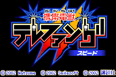

Keitai Denjuu Telefang 2 - Speed (Japan)
Stateless / Passcode 💾 MultiBoot 🎮 4P Link
Cartridge Identity
- Game Code
ATSJ(FamilyATS)- Header Title
TELEFANG2SPE- Maker / Revision
2N/ rev0- ROM Size
- 8.0 MiB (8,388,608 B)
- Save Media
None / Unknown- SHA-256
76f6e7ea9ba0472d3ec75b4dc75b5aae88c8dec2825bb65eb29dc4eb10b1543a- Engine / SDK Group
comm-013(29 families)
Screenshots


Link Cable & Multiplayer Communications
This title contains detected communication capabilities: 💾 MultiBoot 🎮 4P Link.
Detailed protocol specifications, SIO registers, Joybus commands, and MultiBoot sequences are documented in the Link & Multiplayer Reference.
- Multi-Player SIO (4P)
- 16-bit ring network · SIOCNT (
0x04000128) literals:0x163294,0x1632c8,0x16356c· SIODATA32/SIOMULTI0 (0x04000120) literals:0x163564 - Single-Cart MultiBoot
- Single-Cartridge MultiBoot (Download Play) client/server handler · Thumb SWI 0x25 (
0xDF25):0x1f45c0,0x20552c,0x20944a,0x209506
Cartridge Storage Architecture: Stateless / Passcode
Zero non-volatile battery hardware: This cartridge PCB contains ROM only (no SRAM, Flash, or EEPROM chips). Progression is preserved via on-screen passcodes or session-only gameplay. No
.sav file is generated or required.
ROM Assets, Compression & Audio
- BIOS Compression
- LZ77 (
0x10): 0 streams · RLE (0x30): 0 streams - ROM Pointer Tables
- 157 tables (0 pointing to validated compressed streams)
- SDK Backup Tags
FLASH_V126
Asset Map (formatkit.asset-map.v1)
Download ATSJ-r0-76f6e7ea9ba0472d.asset-map.json.gz (138,007 B (134.8 KiB)) Verified PASS · 2.68% coverage
| Metric | Bytes / Value | Entries |
|---|---|---|
| Identified | 173,984 B (169.9 KiB) (2.07%) | 1,112 |
| Mapped | 0 B (0.00%) | 0 |
| Opaque | 50,860 B (49.7 KiB) (0.61%) | 1 |
| Unknown | 8,163,764 B (7.79 MiB) (97.32%) | 1,051 |
| Total ROM Size | 8,388,608 B (8.00 MiB) | 2,164 |
| Coverage % | 2.68% | — |
| Entries w/ Code Refs | 1,150 / 2,164 (53.14%) | — |
Top Identified Formats: gfx.gba-palette (1,111 · 173,792 B (169.7 KiB)) · gba.rom-header (1 · 192 B)
Largest unknown Extents (Headerless / Custom Asset Candidates)
| Offset | Size | Shannon Entropy | Code Refs |
|---|---|---|---|
0x002AEEB0 | 1,123,228 B (1.07 MiB) | 6.826 bits/B | 0 |
0x0048D428 | 300,952 B (293.9 KiB) | 6.989 bits/B | 0 |
0x006DC43C | 290,316 B (283.5 KiB) | 7.326 bits/B | 0 |
0x00643440 | 278,976 B (272.4 KiB) | 7.175 bits/B | 0 |
0x006054B4 | 253,804 B (247.9 KiB) | 7.130 bits/B | 0 |
gzip -dk ATSJ-r0-76f6e7ea9ba0472d.asset-map.json.gz && gbakit map verify rom.gba ATSJ-r0-76f6e7ea9ba0472d.asset-map.json
gbakit assets export rom.gba --asset-map ATSJ-r0-76f6e7ea9ba0472d.asset-map.json -o out/Text, Fonts & Scene Data
- Primary Text Encoding
- Custom 16-bit Huffman (
10ASCII strings) - Font & VWF Indicators
- VWF Width Table 1bpp Font · BIOS SWIs: BitUnPack
0x10:1· LZ770x11/12:5· Huffman0x13:3· RLE0x14/15:2 - Scene & Packaging
62ROM pointer tables (≥32 entries,16≥200) ·1relativeu32TOCs ·163OAM metasprite hits
Hardware MMIO Subsystems
ppu_display0x8165150,0x81652a8